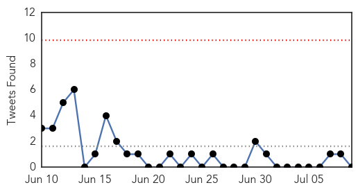
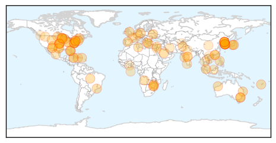

30 Day Trends
Web: 0 alerts, 1 warnings
Twitter: 0 alerts, 0 warnings
Top Articles:
- 0.997
- (LEAD) S. Korea's MERS death toll stays flat with no new cases
- 0.992
- Spike in Canberra flu cases
- 0.985
- New group of Clint students, staff tested for tuberculosis
- 0.985
- First MERS Death After 8 Days; Toll Reaches 34
- 0.978
- A 'hidden epidemic' in the US has ballooned into a public health fiasco -- and no solutions are in sight
- 0.975
- How not to get the flu this season
- 0.966
- Lyme disease caused by ticks may cost $1.3 billion a year
- 0.965
- Flu season is here and it's time to vaccinate
- 0.963
- To fight off a potential Mers virus outbreak, health and government officials must be totally honest
- 0.950
- Rash illness, commonly affecting children, spreading in Tokyo
- 0.945
- HEALTH MINISTRY ADVISES PUBLIC ON CHICKENPOX
- 0.917
- Vomiting bug from Asia spreading globally, threatens wave of gastrointestinal outbreaks, World News & Top Stories
- 0.917
- Chicago Tribune
- 0.917
- Chicago Tribune
- 0.917
- Chicago Tribune
- 0.917
- Chicago Tribune
- 0.917
- Chicago Tribune
- 0.917
- Chicago Tribune
- 0.917
- Chicago Tribune
- 0.917
- Chicago Tribune
- 0.917
- Chicago Tribune
- 0.917
- Chicago Tribune
- 0.917
- Chicago Tribune
- 0.917
- Chicago Tribune
- 0.917
- Chicago Tribune
- 0.917
- Chicago Tribune
- 0.917
- Chicago Tribune
- 0.917
- Chicago Tribune
- 0.917
- Chicago Tribune
- 0.917
- Chicago Tribune
- 0.917
- Chicago Tribune
- 0.917
- Chicago Tribune
- 0.917
- Chicago Tribune
- 0.910
- The world windows to Thailand
- 0.902
- Warming Weather Causing Uptick In Lyme Disease From Ticks
- 0.885
- Leptospirosis Case: Two more deaths, toll reaches 14
- 0.871
- No Swimming: Health Risks Associated with Floodwaters
- 0.866
- White House urges end to conflict in South Sudan
- 0.855
- Install epidemics system
- 0.848
- DOH admits lack of equipment to detect MERS in passengers entering Zamboanga seaport
- 0.847
- More TB Testing Ordered in Texas Border City School
- 0.845
- Masvingo blames vendors for typhoid
- 0.787
- ERF provided healthcare services through strengthened static centres and mobile outreach - Pakistan
- 0.780
- Unicef warns of child deaths in North Korea drought, East Asia News & Top Stories
- 0.776
- UNICEF warns of child deaths in North Korea drought
- 0.775
- Making Patients Pay for Drugs Could Breed Superbugs
- 0.775
- Has deadly water amoeba found a home in Minnesota?
- 0.774
- Tracking Cyclospora in Travis County - Story
- 0.772
- Year's 1st Japanese encephalitis case confirmed in Kaohsiung
- 0.765
- Water measures in place at health facilities – Health Ministry
Showing top 50 articles...
Top Tweets:
- 0.601
- Tiramos 1/3 de comida a la basura mientras millones de personas pasan hambre. No al despilfarro en supermercados: https://t.co/Ms8KY8Zlwg
Web/News Articles

Tweets
Article Locations
Article Confidences